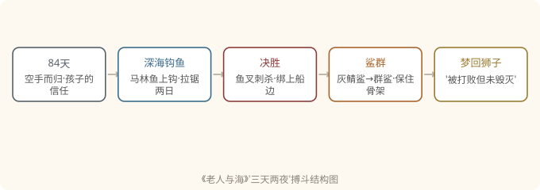

老人与海
| 作者 | 海明威 |
|---|---|
| 成书/出版 | 1952年出版（Britannica），获1953年普利策奖 The Old Man and the Sea — Encyclopaedia Britannica（百科全书） |
| 国别/地区 | 美国 |
| 时代 | 现当代 · 20世纪 |
| 体裁 | 中篇小说（Britannica：'short heroic novel'——短小的英雄小说） |
| 语言 | 英语 |

二、创作背景
创作背景（Britannica）：以古巴渔村与湾流（Gulf Stream）为背景——海明威住在古巴观澜庄约20年（Britannica：Lived ~20 years in Cuba (Finca Vigía near Havana)）。小说源于1930年代他记录的渔夫故事（'On the Blue Water'一文素材，通说待核）。
出版与荣誉（Britannica）：1952年出版；'awarded the 1953 Pulitzer Prize for fiction'（获1953年普利策小说奖）；1954年诺贝尔奖授奖辞特别提及此书（'cited when he won the Nobel Prize for Literature in 1954'）。
地位：'An immediate success and came to be regarded as one of Hemingway's finest works'（立获成功，被视为海明威最好的作品之一——Britannica）；'his last major work of fiction'（最后一部重要的虚构作品，Britannica）。
三、内容脉络
圣地亚哥——古巴老渔夫——已84天没捕到鱼；学徒马诺林被父母调去别的船，但孩子仍送来食物与鱼饵（Britannica：has gone 84 days without a catch...Manolin's family forces the boy to fish elsewhere）。
第八十五天，老人把小船划到极远的湾流深处，钩住一条巨大的马林鱼——' admire its strength and dignity'（钦佩它的力量与尊严，Britannica）——搏斗三天两夜：手被勒破、左手抽筋、与鲨式的孤独对话；终于以鱼叉刺杀马林鱼，把它绑在船边。
归途的鲨群：血腥引来灰鲭鲨与铲鼻鲨群轮番进攻——'一个人可以被毁灭，但不能被打败'（A man can be destroyed but not defeated——原文，公有领域）；老人杀掉数条，保住了鱼骨（Britannica：despite killing some, he can only protect the skeleton）。
结局：深夜回港，扛着桅杆跌了又起；次日渔夫们围着那副18英尺的骨架惊叹，马诺林看到老人的血手哭了——'从此跟我一起出海'（Britannica：Manolin...pledges to fish with him again）；老人在椅子上'梦见狮子'入睡。
四、主要人物表
| 人物 | 身份 | 说明 |
|---|---|---|
| 圣地亚哥 | 古巴老渔夫 | '打不败'的老人——'海明威准则'（荣誉、勇气、坚忍、尊严——Britannica：honor, courage, endurance, dignity）的终极化身 |
| 马诺林 | 少年学徒 | 老人的爱与传承：咖啡、鱼饵、眼泪与誓言 |
| 马林鱼 | 18英尺的大鱼 | '兄弟'般的对手——Britannica 记老人钦佩其力量与尊严 |
| 灰鲭鲨与铲鼻鲨群 | 掠夺者 | '毁灭'的化身——老人'被打败'的方式 |
| 狮子（梦中意象） | recurring dream | 青春与力量的回归——全书以'梦见狮子'收束（通说） |
五、主题与艺术特点
- 重压之下的优雅：与不可战胜者搏斗的姿态高于胜负——'grace under pressure'（Britannica：Themes: perseverance, man versus nature, and dignity in struggle ('grace under pressure')）。
- 可以被毁灭不能被打败：肉体（鱼骨）的失败与精神（人格）的胜利——尼采式与基督式意象的双重解读（通说待核）。
- 人与自然的兄弟观：老人称鱼'兄弟'、愧对'被杀的兄弟'—— hunter and hunted 的悲剧性互认（通说）。
- 艺术特点：'short heroic novel'的浓缩结构（三天两夜单一事件）、内心独白与自言自语、冰山式的省略（老人从不解释）。
六、影响与评论
- Britannica（Old Man and the Sea 条目）：1953普利策；诺奖授奖辞提及；'one of Hemingway's finest works'。
The Old Man and the Sea — Encyclopaedia Britannica（百科全书） - Britannica：1958年斯宾塞·屈塞电影改编（a 1958 film adaptation starring Spencer Tracy is noted）。
The Old Man and the Sea — Encyclopaedia Britannica（百科全书） - 文本影响：'一个人可以被毁灭但不能被打败'成为世界通用格言（本条为一般性语言事实，语料统计待核）。
The Old Man and the Sea — Encyclopaedia Britannica（百科全书） - 中国接受：海明威文体对当代汉语写作的广泛影响（通说待核）；'老人与海'入选多种语文教材（通说待核）。
Ernest Hemingway — Encyclopaedia Britannica（百科全书）
七、阅读建议
- 情节极简（单一事件），全部重量在'过程'——不可跳读搏斗段。
- 基督教意象（受伤的掌、扛桅杆的十字架式行走）作为潜文本存在——是否坐实历来有争论（通说待核）。
- 老人自言自语的'独白'与'谎言'（他说自己不孤独）——注意叙述的裂隙。
- 吴劳译《老人与海》（上海译文出版社）：通行译本。
- 李继宏译本（天津人民出版社，通说待核）与余光中译本（通说待核）。
- 英文本：Scribner 通行版（含前言注释）。
通读全书（两小时可完）→ 精读'鲨群三袭'段与结尾'梦见狮子' → 对照《永别了武器》看'失败的优雅'在海明威中的延续 → 讨论开头84天与结尾90天的数字设计。
八、待核实
- 《生活》杂志1952年9月1日刊出（通说）与五日内售出500万册说（通说）待核。
- '18英尺骨架'与'小船走得多远'的细节逐字核对照吴劳译本。
- 基督教意象解读的学术史（Bickford Sylvester 等论文，通说）待核。
- 吴劳/李继宏译本出版信息待核。
本页主要来源
- The Old Man and the Sea — Encyclopaedia Britannica（百科全书）
- Ernest Hemingway — Encyclopaedia Britannica（百科全书）
相关作品：了不起的盖茨比哈克贝利·费恩历险记
海明威的其他收录作品：老人与海